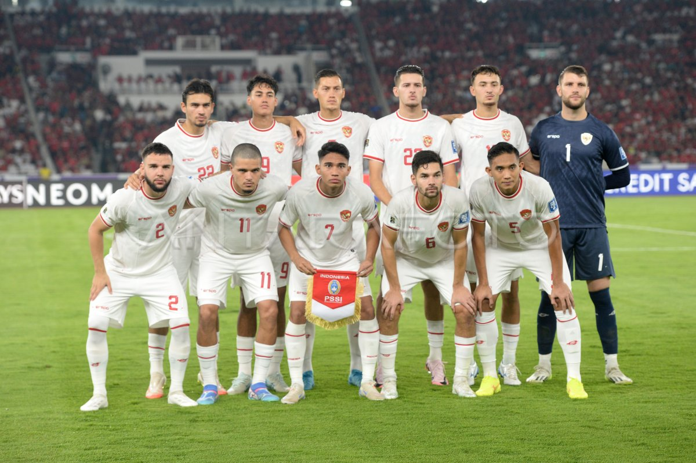
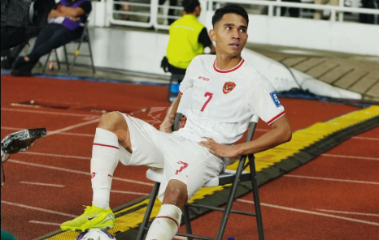

Timnas Indonesia mencatatkan kemenangan spektakuler dengan menundukkan Arab Saudi 2-0 dalam laga Kualifikasi Piala Dunia 2026. Pertandingan yang digelar pada November 2024 ini menjadi salah satu momen paling bersejarah dalam perjalanan skuad Garuda. Dengan atmosfer stadion yang penuh dukungan dari para suporter, Indonesia bermain tanpa rasa gentar melawan salah satu kekuatan sepak bola Asia.
Sensasi! Timnas Indonesia Taklukkan Arab Saudi 2-0 di Kualifikasi Piala Dunia


Marselino Ferdinan menjadi bintang dalam laga tersebut dengan dua gol brilian yang ia cetak. Gol pertama lahir dari kerja sama apik lini tengah, di mana Marselino memanfaatkan celah pertahanan Arab Saudi dan melepaskan tembakan yang tak mampu dibendung kiper lawan. Gol kedua semakin menunjukkan ketenangan dan kualitasnya, dengan penyelesaian akhir yang mematikan di depan gawang.
Kemenangan ini menunjukkan betapa pesatnya perkembangan sepak bola Indonesia di bawah arahan pelatih dan sistem yang lebih profesional. Para pemain tampil solid dalam bertahan dan efektif saat menyerang, membuktikan bahwa mereka mampu bersaing di level internasional. Meski menghadapi tekanan besar.
Hasil ini tidak hanya memperbaiki posisi Indonesia di klasemen grup tetapi juga memberikan kepercayaan diri yang besar bagi skuad Garuda. Peluang untuk melaju ke babak berikutnya kini semakin terbuka, dan dukungan penuh masyarakat Indonesia menjadi motivasi tambahan untuk menghadapi laga-laga berat berikutnya. Keberhasilan ini juga menjadi simbol kebangkitan sepak bola Indonesia di panggung global. Dengan kerja keras, disiplin, dan mentalitas yang terus diasah, Indonesia semakin dekat untuk mewujudkan mimpi besar tampil di Piala Dunia. Laga melawan Arab Saudi adalah bukti bahwa impian itu bukan lagi sesuatu yang mustahil.
Contact Us
If you have any inquiries or want to collaborate with RF ExtraNews, don't hesitate to get in touch!
Email Us